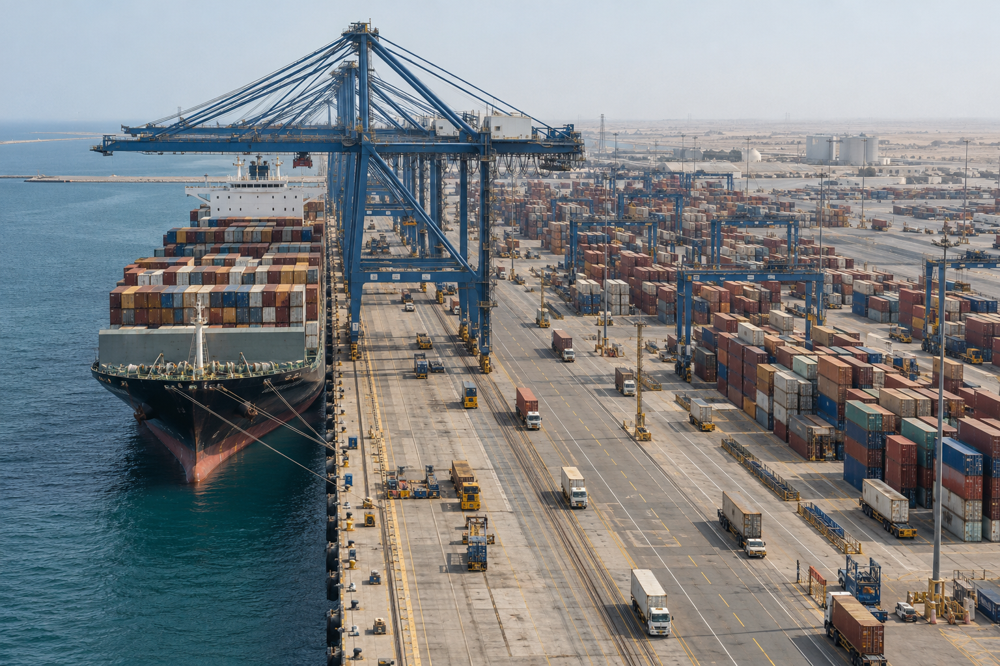

Manufacturing base
Land, real estate and equipment create the physical foundation for the supplier platform, bringing the requirements of local manufacturing into one connected environment
- Purpose-built industrial infrastructure under development

TASARU Supplier Hub is located within MASARAT Mobility Park™ in the Special Economic Zone at King Abdullah Economic City (KAEC).
From KAEC to the supplier hub, discover the places that connect global expertise with local manufacturing.
The wider city setting for a connected automotive ecosystem.
Discover Location
Land, real estate and equipment create the physical foundation for the supplier platform, bringing the requirements of local manufacturing into one connected environment
The Hub benefits from proximity to key infrastructure and logistics connections, including King Abdullah Port, with links to domestic, regional and international markets
Bringing component manufacturing into the Kingdom strengthens the relationship between global supplier expertise and the growing Saudi OEM base
TASARU Supplier Hub focuses on the suppliers and capabilities that help turn localization into production. TSH is situated in MASARAT Mobility Park™, which provides the automotive and mobility environment.
Explore the locationFor supplier, partnership, media or stakeholder inquiries, contact our team